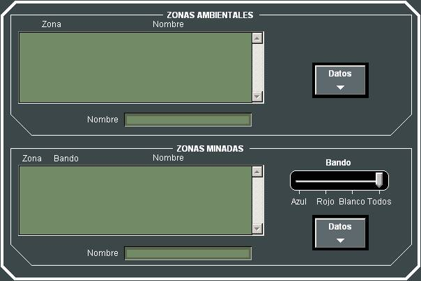
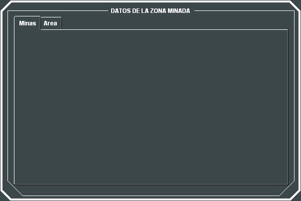

Control del Escenario
Mediante el diálogo de Control del Escenario el Instructor puede modificar las Zonas Ambientales y las Zonas Minadas. Muestra la lista de todas las zonas ambientales y todas las zonas minadas incluidas en el Ejercicio. La lista de las zonas minadas puede ser filtrada por bando.

Seleccionando la Zona que se desea editar y pulsando el botón de Datos correspondiente, se le presentará al Instructor un diálogo en mediante el que podrá modificar todos los parámetros que se establecieron en Preparación para la Zona Ambiental o Minada seleccionada.
Edición de Zonas Ambientales:
En este diálogo se muestra al instructor todos los datos asociados a la Zona Ambiental en edición, agrupados en las solapas Meteorología, Electromagnetismo y Batitermia, así como la zona geográfica asociada en la solapa Área.
Las características de los datos que pueden ser modificados por el Instructor se describen en el apartado Preparación – Modelos Básicos – Condiciones Ambientales y si no han sido editados previamente, los datos coincidirán con los introducidos en Preparación. Para modificarlos deberá introducir los nuevos datos y pulsar Petición, en el área correspondiente de las siguientes ventanas:
La traza batitérmica puede ser consultada gráficamente en la solapa correspondiente, pero no puede ser editada por el instructor:
Por último, la zona asociada a la zona ambiental en edición puede ser modificada tanto en los puntos geográficos que la definen inicialmente como en el movimiento (rumbo y velocidad) que se le asigna. Pulsando el botón Editar, se presenta sobre la Presentación Táctica una ayuda gráfica para la edición de la polilínea que define la zona. Para modificar el movimiento, el instructor debe introducir el nuevo rumbo y velocidad deseados y pulsar Petición.
Edición de Zonas Minadas:

En este diálogo se muestra al instructor todos los datos asociados a la Zona Minada en edición en la solapa Minas, así como la zona geográfica asociada en la solapa Área.
Si no han sido editados previamente, los datos de la Zona Minada coincidirán con los introducidos en preparación (ver Preparación – Ejercicios – Zonas Minadas). Para modificarlos deberá introducir los nuevos datos y pulsar Petición.

La zona asociada a la zona minada en edición puede ser modificada en los puntos geográficos que la definen. Pulsando el botón Editar, se presenta sobre la Presentación Táctica una ayuda gráfica para la edición de la polilínea que define la zona.